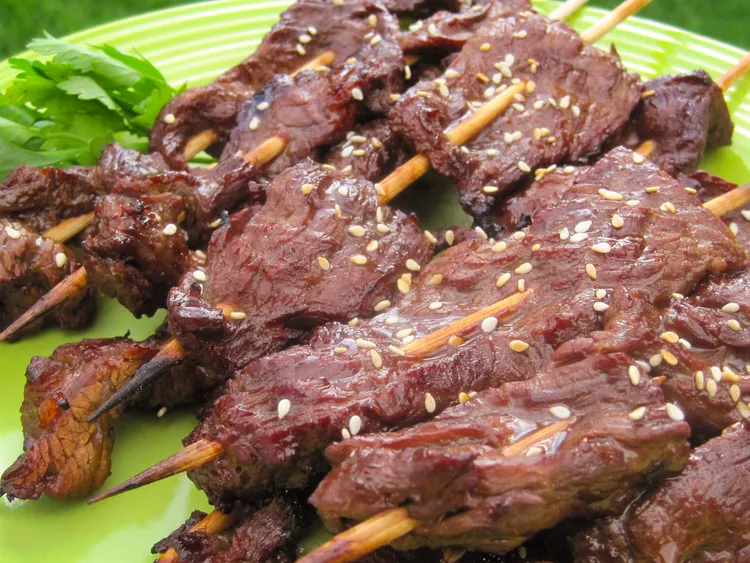

Teriyaki steak-on-a-stick

A quick and easy, very tasty version of the teriyaki steak-on-a-stick that you get from a Chinese restaurant. It's great as an appetizer or even as finger food at a football watching party!
Ingredients
- ½ cup soy sauce
- ¼ cup olive oil
- ¼ cup water
- 2 tablespoons molasses
- 2 teaspoons mustard powder
- 1 teaspoon ground ginger
- ½ teaspoon garlic powder
- ½ teaspoon onion powder
- 2 pounds flank steak, cut into thin strips
- 32 wooden skewers (8 inch long) soaked in water
Steps
- combine all ingredients and refrigerate for at least 8hrs
- Preheat the oven broiler
- Thread meat on skewers and place on broiler rack
- Broil for 3 to 4 minutes
- plcae on platter to serve